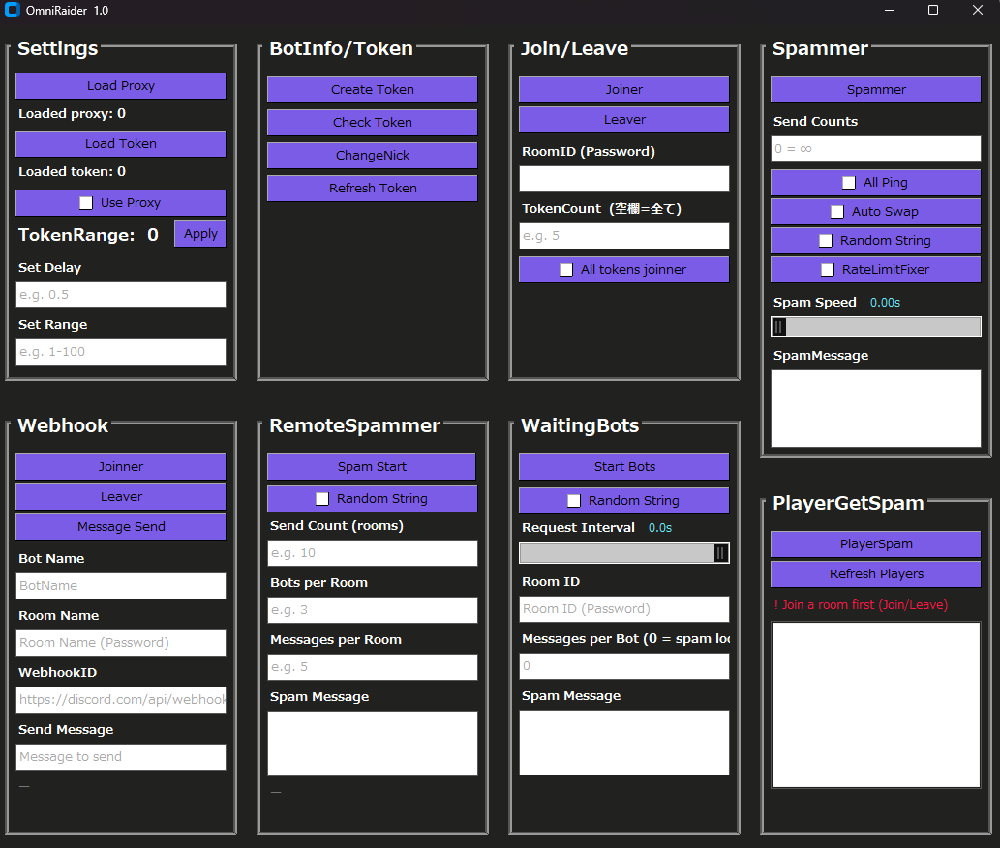
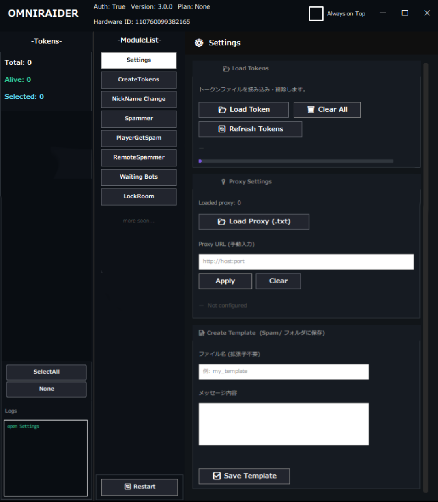
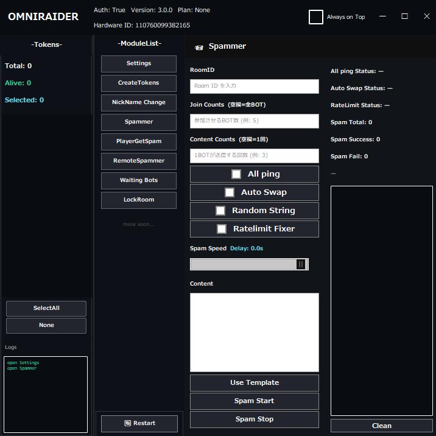
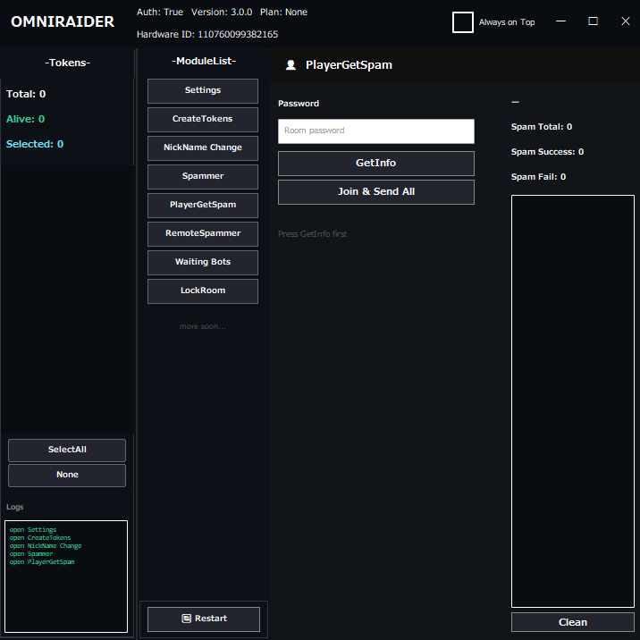
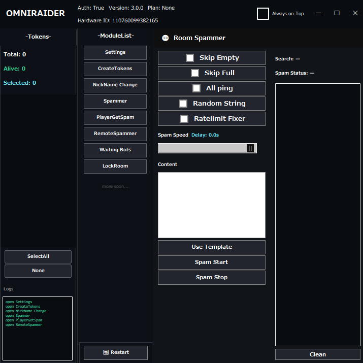

はじめに
この説明に使っている画像はver2.0のものになります。
ver1.0でも機能に変わりはなく見た目のみの変更になります。

① 設定
[Load Token]
以前作ったトークンを使いたいときには、この機能を使用してください。
※トークンについては目次トークンについてをご参照下さい。
[Load Proxy]
Proxyをお持ちの方はこちらからご使用下さい。
[Create Template]
SPAM等に使いたいメッセージをテンプレとして残したい方はこちらからファイルに保存できます。
保存したtxtファイルは、
Spammerタブなどの「Use Template」ボタンを押すことで読み込むことができます。

② トークンについて
トークンは、ツールの機能を利用するための認証情報です。
トークンを取得するには、Module Listの中にあるCreate tokensを開きます。
トークンに付けたい名前と、作りたい個数を入力します。
作成ボタンを押すと、左側の-tokens-リストに追加されます。
[Nick Names]
トークンに付けるニックネームを入力します。
"Token ID"に既存のトークンIDを入力して、"Change Name"に変更したい名前を入力します。
[トークンが使えなくなったら]
トークンは1時間以上経つと使えなくなります。（リストに赤い文字で表示されます）
"Refresh Tokens"ボタンを押すと、またトークンが使えるようになります。
③ Spammer
隠れ乱闘にて任意のチャットを大量に流し入れる機能です。
[Room ID]
ここにゴッフィーの合言葉を入力して下さい。
[Join Counts]
ここに入れるbotの人数を入力して下さい。
[Content Counts]
1人あたりが流し込むメッセージの回数を入力して下さい。
[All ping]
BOTが同時にスパムを送信します。(必須)
[Auto Swap]
Botが蹴られた場合自動で新しいBotを追加させます。(必須)
[Random String]
スパムする文章の最後へランダムな文字列を追加します。
[RateLimitFixer]
レートリミットを掛けられた時、レートリミットが終わるまでリクエストの送信を一時停止します。

④ PlayerGetSpam
[GetInfo]
Passwordにゴッフィーの合言葉を入力してください。
"GetInfo"ボタンを押して部屋内の参加者の情報を取得できます。
[Join＆Send All]
参加者全員の持ち物の情報メッセージを送信します。

⑤ RemoteSpammer
ランダムにBOTが部屋を検索して、
見つかった部屋を順次：メンバーが1人以上ならBOT入室→送信→退室というスパムを送り込みます。
Twitterなどの宣伝に使ってください。
[Skip Empty]
部屋に誰もいない場合はスキップします。(必須)
[Skip Full]
部屋が満員の場合はスキップします。(必須)
※[All ping]以降は③ Spammerで説明されています。

⑥ WaitingBot
動画のように部屋がロック中又は満席の場合のみ待機します。
枠が空いたりすると即BOTは入室し、スパム行為を行います。
設定等は③ Spammerをご参照ください。
⑦ LockRoom
Room Nameにゴッフィーの合言葉を入力すると、その部屋をロックできます。
⑧ よくある質問
Q.roomに接続できない
リクエストの送り過ぎなどでバグがおきています。
一度GUIを閉じて再起動してみてください。
それでも直らない場合は、VPNを使ってください。
それでも直らない場合は、開発者までお問い合わせください。